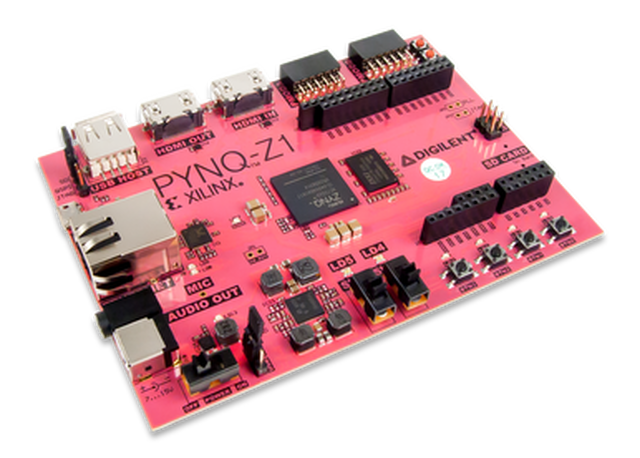

Downloadable PYNQ Images
If you have a Zynq board, you need a PYNQ SD card image to get started. You can download a pre-compiled PYNQ image from the table below. If an image is not available for your board, you can build your own SD card image (see details below).
| Board | SD card image | Documentation |
|---|---|---|
| PYNQ-Z2 | v2.7 | PYNQ setup guide |
| PYNQ-Z1 | v2.7 | PYNQ setup guide |
| PYNQ-ZU | v2.7 | GitHub project page |
| Kria KV260 Starter Kit* | Ubuntu image | Kria PYNQ setup |
| ZCU104 | v2.7 | PYNQ setup guide |
| RFSoC 2x2 | v2.7 | RFSoC 2x2 GitHub Pages |
| ZCU111 | v2.7 | PYNQ RFSoC workshop |
| Ultra96V2 | v2.7 | Avnet PYNQ documentation |
| Ultra96 (legacy) | v2.7 | See Ultra96V2 |
| TySOM-3-ZU7EV | v2.5 | GitHub project page |
| TySOM-3A-ZU19EG | v2.5 | GitHub project page |
*For the Kria KV260, follow the guide for the Ubuntu image and then follow the Kria PYNQ setup instructions to install PYNQ.

| PYNQ-Z2 | |
|---|---|
| Device | Zynq Z7020 |
| Memory | 512MB DDR3 |
| Storage | MicroSD |
| Video | HDMI In & Out ports |
| Audio | ADAU1761 codec with HP + Mic, Line in |
| Network | 10/100/1000 Ethernet |
| Expansion | USB host (PS) |
| GPIO | 1x Arduino Header |
| 2x Pmod* | |
| 1x RaspberryPi header* | |
| Other I/O | 6x user LEDs |
| 4x Pushbuttons | |
| 2x Dip switches | |
| Dimensions | 3.44” x 5.51” (87mm x 140mm) |
| Webpage | TUL PYNQ-Z2 |
*PYNQ-Z2 RaspberryPi header shares 8 pins with 1 Pmod